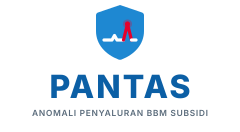
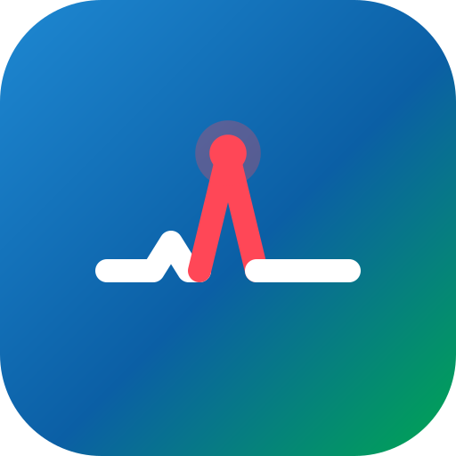

Penyaluran yang pantas, tercatat, terawasi. — pratinjau identitas visual v1.0
Perisai aliran: garis putih adalah penyaluran normal, lonjakan merah adalah anomali yang terdeteksi.


Diselaraskan dengan bahasa warna korporat Pertamina. Merah hanya untuk anomali — tidak pernah dekoratif.
Plus Jakarta Sans untuk judul · Inter untuk antarmuka · JetBrains Mono untuk angka.
Status selalu memakai warna dan label — laporan sering dicetak hitam-putih.
| SPBU | Produk | Surat Jalan | Terukur | Selisih | Status |
|---|---|---|---|---|---|
| 34.116.02 | Biosolar | 16.000 L | 15.940 L | −0,4% | ✓ Normal |
| 34.116.07 | Pertalite | 24.000 L | 23.760 L | −1,0% | ! Tinjau |
| 34.116.11 | Biosolar | 16.000 L | 15.548 L | −2,8% | ▲ Anomali |
| 34.116.23 | Pertalite | 24.000 L | 23.208 L | −3,3% | ▲ Anomali |
Angka pada tabel di atas adalah contoh ilustrasi, bukan data operasional.